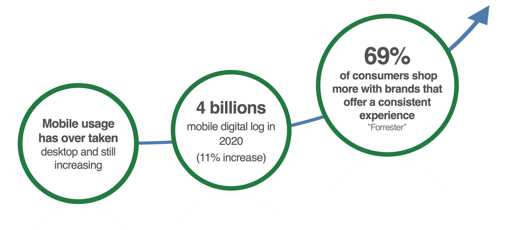

Back
Over the years, mobile design and development teams have grown, but so have the inefficiencies and inconsistencies in the product interfaces. The lack of a unified mobile design system has led to various challenges, such as outdated guidelines, repeated efforts in building components, and inconsistency across different platforms and brands.
• No mobile design system and designers using with out of date guidelines (no single source of truth)
• Inefficiency of repeatedly building similar components from scratch in both design and code
• Lack of consistent across different platforms and brands.
• Design and developers not using the single code based correctly and creating independent styles
• Allows for continuous improvement and scaleability
• Starting with core elements (Text styles and colours), Removing duplicates and redundancies
(Over 40 different font styles were found in the code from 1 brand, we reduced that down to 13)
• Created design tokens instead of hard-coded values, so can it scale and support other brands.
• Then defined which are considered as components and alignment with the updated text styles and colours
• After completing the design of a component, guidance was provide to ensure they had the correct interaction patterns
Implementing a unified mobile design system addressed critical challenges and resulted in significant improvements in efficiency, consistency, and collaboration. By establishing a single source of truth and creating reusable components, not only enhanced its product development process but also reinforced its brand identity. The design system's scalability ensures continued growth and will adapt to future needs, making it a crucial asset for the company's ongoing success.
Back